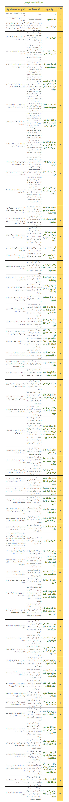

شرح کامل دعای یس مغربی
ختم سوره مبارکه ی «یس» دارای اثرات مطلوب است و نتیجه ی مادی و معنوی و بیحد و حصری دارد، این همه خیرات و برکات سوره «یس» به این علت است که قلب قرآن بوده و در شأن و منزلت پیامبر خاتم نازل شده است، در واقع این سوره مجموعه عقاید پیامبر است و اصول دین در آن مکنون و محفوظ است.
یکی از روشهای ختم سوره «یس»( یاسین )«مغربی» است که از کتاب «سّرُالمُستَتِر» منسوب به شیخ بهایی استنتاج شده است.
«مغربی شخصی بوده به نام «ابیعبداللهمحمدبنیعقوب تونسی مغربی» که این ختم به او منسوب است. او دارای کتب عرفانی و تفسیری فراوانی است که مرحوم نراقی در کتاب خزائن برخی از آن را به تناسب ذکر کرده، وی معتقد به این است که حروف قرآن دارای روح بوده و برای انس با آن خلوت لازم است. بنابراین تمام حروف سوره «یس» دارای روح و این حروف کالبد آن است که باید به آن روح رسید. اللهم بحرمة یس این مریض را شفا ده فورا شفا یابد.
یاسین مغربی چنان است که در بین آیات سوره مبارکه یاسین دعاها و ذکرها و آیات دیگری از قرآن مجید خوانده می شود. و برای این دعا خاصیت بسیار نوشته شده است:
خواص سوره یس مغربی نقل از منبع فوق:
۱- اگر این دعا را هفت بار بر کاسه چینی که پر از آب باشد بخواند و از آن آب به خورد هر کس دهد آن شخص مطیع او گردد.
۲- اگر غایبی در سفر باشد و هفت بار به طرف او بدمد بزودی از آن سفر باز گردد.
۳- اگر سه بار مصروعی بخواند شفا یابد و مریض ۵ بار بخواند و بگوید: اللهم بحرمة یس این مریض را شفا ده فورا شفا یابد.
۴- اگر بر کاغذی بنویسد و بر کاغذ دمد عجائب بیند به قدرت خدا و همه کس او را مطیع و فرمانبردار شود.
۵- اگراین سوره بر شیرینی بخواند و بخورد دشمن دهد دوست گردد.
۶- اگر بر عود یا زعفران و گلاب در ساعت زهره یا ساعت مشتری هفت بار بخوانند و بر اتش نهد که عود بسوزد و گلاب و زعفران تبخیر شود بیم ان باشد که از محبت دیوانه شود.
۷- اگر کسی را سحر کرده باشند سه بار این دعا و سوره مبارکه را بر پیاز بخواند و بر اتش بگذارد و خود را بر ان بدارد سحر باطل شود.
۸- اگر این سوره را در کاسه چینی یا زعفران بنویسد و بشوید و پانزده بار بخواند دل و جگر وی قوی گردد و انچه بشنود یاد گیرد و فراموش نکند.
۹- اگر این سوره را هفت بار بخواند به نیت هر کسی بخواند فورا حاضر شود.
۱۰- اگر این سوره را بر اب بخواند و با ان اب غسل کند و دو رکعت نماز بجا اورد و بعد از حمد هفت بار سوره توحید و اعوذتین(فلق و ناس) را بخواند هر حاجت مشروعه دارد براورده شود.
۱۱- اگر کسی تنگ دست باشد بعد نماز خفتن(عشاء) یک بار بخواند و صد بار صلوات بفرستد حق تعالی روزی او را فراخ کند.
۱۲- اگر کسی این سوره را با خود دارد از خطرات ارضی و سماوی محفوظ ماند.
ادامه مطلب
طبقه بندی: محتوای سوره یس،
برچسب ها: یس، سوره یس، ختم یس مغربی، کتاب طم طم هندی، خواص سوره یس مغربی درجامع الدعوات کبیر،
تاریخ : دوشنبه 17 اسفند 1394 | 02:18 ب.ظ | نویسنده : مرضیه جعفری | نظرات
بِسْمِ اللَّهِ الرَّحْمَنِ الرَّحِیمِ
یس(۱)
وَ الْقُرْءَانِ الحَْكِیمِ(۲)
إِنَّكَ لَمِنَ الْمُرْسَلِینَ(۳)
عَلىَ صِرَاطٍ مُّسْتَقِیمٍ(۴)
تَنزِیلَ الْعَزِیزِ الرَّحِیمِ(۵)
لِتُنذِرَ قَوْمًا مَّا أُنذِرَ ءَابَاؤُهُمْ فَهُمْ غَافِلُونَ(۶)
لَقَدْ حَقَّ الْقَوْلُ عَلىَ أَكْثرَِهِمْ فَهُمْ لَا یُؤْمِنُونَ(۷)
إِنَّا جَعَلْنَا فىِ أَعْنَاقِهِمْ أَغْلَالًا فَهِىَ إِلىَ الْأَذْقَانِ فَهُم مُّقْمَحُونَ(۸)
وَ جَعَلْنَا مِن بَینِْ أَیْدِیهِمْ سَدًّا وَ مِنْ خَلْفِهِمْ سَدًّا فَأَغْشَیْنَاهُمْ فَهُمْ لَا یُبْصِرُونَ(۹)
وَ سَوَاءٌ عَلَیهِْمْ ءَ أَنذَرْتَهُمْ أَمْ لَمْ تُنذِرْهُمْ لَا یُؤْمِنُونَ(۱۰)
إِنَّمَا تُنذِرُ مَنِ اتَّبَعَ الذِّكْرَ وَ خَشىَِ الرَّحْمَانَ بِالْغَیْبِ فَبَشِّرْهُ بِمَغْفِرَةٍ وَ أَجْرٍ كَرِیمٍ(۱۱)
إِنَّا نحَْنُ نُحْىِ الْمَوْتىَ وَ نَكْتُبُ مَا قَدَّمُواْ وَ ءَاثَرَهُمْ وَ كلَُّ شىَْءٍ أَحْصَیْنَاهُ فىِ إِمَامٍ مُّبِینٍ(۱۲)
وَ اضْرِبْ لهَُم مَّثَلاً أَصحَْابَ الْقَرْیَةِ إِذْ جَاءَهَا الْمُرْسَلُونَ(۱۳)
إِذْ أَرْسَلْنَا إِلَیهِْمُ اثْنَینِْ فَكَذَّبُوهُمَا فَعَزَّزْنَا بِثَالِثٍ فَقَالُواْ إِنَّا إِلَیْكُم مُّرْسَلُونَ(۱۴)
قَالُواْ مَا أَنتُمْ إِلَّا بَشَرٌ مِّثْلُنَا وَ مَا أَنزَلَ الرَّحْمَانُ مِن شىَْءٍ إِنْ أَنتُمْ إِلَّا تَكْذِبُونَ(۱۵)
قَالُواْ رَبُّنَا یَعْلَمُ إِنَّا إِلَیْكمُْ لَمُرْسَلُونَ(۱۶)
وَ مَا عَلَیْنَا إِلَّا الْبَلَاغُ الْمُبِینُ(۱۷)
قَالُواْ إِنَّا تَطَیرَّْنَا بِكُمْ لَئنِ لَّمْ تَنتَهُواْ لَنرَْجُمَنَّكمُْ وَ لَیَمَسَّنَّكمُ مِّنَّا عَذَابٌ أَلِیمٌ(۱۸)
قَالُواْ طَئرُِكُم مَّعَكُمْ أَ ئن ذُكِّرْتُم بَلْ أَنتُمْ قَوْمٌ مُّسْرِفُونَ(۱۹)
وَ جَاءَ مِنْ أَقْصَا الْمَدِینَةِ رَجُلٌ یَسْعَى قَالَ یَقَوْمِ اتَّبِعُواْ الْمُرْسَلِینَ(۲۰)
اتَّبِعُواْ مَن لَّا یَسَْلُكمُْ أَجْرًا وَ هُم مُّهْتَدُونَ(۲۱)
وَ مَا لىَِ لَا أَعْبُدُ الَّذِى فَطَرَنىِ وَ إِلَیْهِ تُرْجَعُونَ(۲۲)
ءَ أَتخَِّذُ مِن دُونِهِ ءَالِهَةً إِن یُرِدْنِ الرَّحْمَانُ بِضُرٍّ لَّا تُغْنِ عَنىِّ شَفَعَتُهُمْ شَیًْا وَ لَا یُنقِذُونِ(۲۳)
إِنىِّ إِذًا لَّفِى ضَلَالٍ مُّبِینٍ(۲۴)
إِنىِّ ءَامَنتُ بِرَبِّكُمْ فَاسْمَعُونِ(۲۵)
قِیلَ ادْخُلِ الجَْنَّةَ قَالَ یَالَیْتَ قَوْمِى یَعْلَمُونَ(۲۶)
بِمَا غَفَرَ لىِ رَبىِّ وَ جَعَلَنىِ مِنَ الْمُكْرَمِینَ(۲۷)
* وَ مَا أَنزَلْنَا عَلىَ قَوْمِهِ مِن بَعْدِهِ مِن جُندٍ مِّنَ السَّمَاءِ وَ مَا كُنَّا مُنزِلِینَ(۲۸)
إِن كاَنَتْ إِلَّا صَیْحَةً وَاحِدَةً فَإِذَا هُمْ خَمِدُونَ(۲۹)
یَاحَسْرَةً عَلىَ الْعِبَادِ مَا یَأْتِیهِم مِّن رَّسُولٍ إِلَّا كاَنُواْ بِهِ یَسْتهَْزِءُونَ(۳۰)
أَ لَمْ یَرَوْاْ كمَْ أَهْلَكْنَا قَبْلَهُم مِّنَ الْقُرُونِ أَنهَُّمْ إِلَیهِْمْ لَا یَرْجِعُونَ(۳۱)
وَ إِن كلٌُّ لَّمَّا جَمِیعٌ لَّدَیْنَا محُْضَرُونَ(۳۲)
وَ ءَایَةٌ لهَُّمُ الْأَرْضُ الْمَیْتَةُ أَحْیَیْنَاهَا وَ أَخْرَجْنَا مِنهَْا حَبًّا فَمِنْهُ یَأْكُلُونَ(۳۳)
وَ جَعَلْنَا فِیهَا جَنَّاتٍ مِّن نخَِّیلٍ وَ أَعْنَابٍ وَ فَجَّرْنَا فِیهَا مِنَ الْعُیُونِ(۳۴)
لِیَأْكُلُواْ مِن ثَمَرِهِ وَ مَا عَمِلَتْهُ أَیْدِیهِمْ أَ فَلَا یَشْكُرُونَ(۳۵)
سُبْحَانَ الَّذِى خَلَقَ الْأَزْوَاجَ كُلَّهَا مِمَّا تُنبِتُ الْأَرْضُ وَ مِنْ أَنفُسِهِمْ وَ مِمَّا لَا یَعْلَمُونَ(۳۶)
وَ ءَایَةٌ لَّهُمُ الَّیْلُ نَسْلَخُ مِنْهُ النهََّارَ فَإِذَا هُم مُّظْلِمُونَ(۳۷)
وَ الشَّمْسُ تجَْرِى لِمُسْتَقَرٍّ لَّهَا ذَالِكَ تَقْدِیرُ الْعَزِیزِ الْعَلِیمِ(۳۸)
وَ الْقَمَرَ قَدَّرْنَاهُ مَنَازِلَ حَتىَ عَادَ كاَلْعُرْجُونِ الْقَدِیمِ(۳۹)
لَا الشَّمْسُ یَنبَغِى لهََا أَن تُدْرِكَ الْقَمَرَ وَ لَا الَّیْلُ سَابِقُ النهََّارِ وَ كلٌُّ فىِ فَلَكٍ یَسْبَحُونَ(۴۰)
وَ ءَایَةٌ لهَُّمْ أَنَّا حَمَلْنَا ذُرِّیَّتهَُمْ فىِ الْفُلْكِ الْمَشْحُونِ(۴۱)
وَ خَلَقْنَا لهَُم مِّن مِّثْلِهِ مَا یَرْكَبُونَ(۴۲)
وَ إِن نَّشَأْ نُغْرِقْهُمْ فَلَا صَرِیخَ لهَُمْ وَ لَا هُمْ یُنقَذُونَ(۴۳)
إِلَّا رَحْمَةً مِّنَّا وَ مَتَاعًا إِلىَ حِینٍ(۴۴)
وَ إِذَا قِیلَ لهَُمُ اتَّقُواْ مَا بَینَْ أَیْدِیكُمْ وَ مَا خَلْفَكمُْ لَعَلَّكمُْ تُرْحَمُونَ(۴۵)
وَ مَا تَأْتِیهِم مِّنْ ءَایَةٍ مِّنْ ءَایَاتِ رَبهِِّمْ إِلَّا كاَنُواْ عَنهَْا مُعْرِضِینَ(۴۶)
وَ إِذَا قِیلَ لهَُمْ أَنفِقُواْ مِمَّا رَزَقَكمُُ اللَّهُ قَالَ الَّذِینَ كَفَرُواْ لِلَّذِینَ ءَامَنُواْ أَ نُطْعِمُ مَن لَّوْ یَشَاءُ اللَّهُ أَطْعَمَهُ إِنْ أَنتُمْ إِلَّا فىِ ضَلَالٍ مُّبِینٍ(۴۷)
وَ یَقُولُونَ مَتىَ هَاذَا الْوَعْدُ إِن كُنتُمْ صَادِقِینَ(۴۸)
مَا یَنظُرُونَ إِلَّا صَیْحَةً وَاحِدَةً تَأْخُذُهُمْ وَ هُمْ یخَِصِّمُونَ(۴۹)
فَلَا یَسْتَطِیعُونَ تَوْصِیَةً وَ لَا إِلىَ أَهْلِهِمْ یَرْجِعُونَ(۵۰)
وَ نُفِخَ فىِ الصُّورِ فَإِذَا هُم مِّنَ الْأَجْدَاثِ إِلىَ رَبِّهِمْ یَنسِلُونَ(۵۱)
قَالُواْ یَاوَیْلَنَا مَن بَعَثَنَا مِن مَّرْقَدِنَا هَاذَا مَا وَعَدَ الرَّحْمَانُ وَ صَدَقَ الْمُرْسَلُونَ(۵۲)
إِن كَانَتْ إِلَّا صَیْحَةً وَاحِدَةً فَإِذَا هُمْ جَمِیعٌ لَّدَیْنَا محُْضَرُونَ(۵۳)
فَالْیَوْمَ لَا تُظْلَمُ نَفْسٌ شَیًْا وَ لَا تجُْزَوْنَ إِلَّا مَا كُنتُمْ تَعْمَلُونَ(۵۴)
إِنَّ أَصْحَابَ الجَْنَّةِ الْیَوْمَ فىِ شُغُلٍ فَكِهُونَ(۵۵)
هُمْ وَ أَزْوَاجُهُمْ فىِ ظِلَالٍ عَلىَ الْأَرَائكِ مُتَّكُِونَ(۵۶)
لهَُمْ فِیهَا فَكِهَةٌ وَ لهَُم مَّا یَدَّعُونَ(۵۷)
سَلَامٌ قَوْلًا مِّن رَّبٍّ رَّحِیمٍ(۵۸)
وَ امْتَازُواْ الْیَوْمَ أَیهَُّا الْمُجْرِمُونَ(۵۹)
* أَ لَمْ أَعْهَدْ إِلَیْكُمْ یَبَنىِ ءَادَمَ أَن لَّا تَعْبُدُواْ الشَّیْطَانَ إِنَّهُ لَكمُْ عَدُوٌّ مُّبِینٌ(۶۰)
وَ أَنِ اعْبُدُونىِ هَاذَا صِرَاطٌ مُّسْتَقِیمٌ(۶۱)
وَ لَقَدْ أَضَلَّ مِنكمُْ جِبِلاًّ كَثِیرًا أَ فَلَمْ تَكُونُواْ تَعْقِلُونَ(۶۲)
هَاذِهِ جَهَنَّمُ الَّتىِ كُنتُمْ تُوعَدُونَ(۶۳)
اصْلَوْهَا الْیَوْمَ بِمَا كُنتُمْ تَكْفُرُونَ(۶۴)
الْیَوْمَ نخَْتِمُ عَلىَ أَفْوَاهِهِمْ وَ تُكلَِّمُنَا أَیْدِیهِمْ وَ تَشهَْدُ أَرْجُلُهُم بِمَا كاَنُواْ یَكْسِبُونَ(۶۵)
وَ لَوْ نَشَاءُ لَطَمَسْنَا عَلىَ أَعْیُنهِِمْ فَاسْتَبَقُواْ الصِّرَاطَ فَأَنىَ یُبْصِرُونَ(۶۶)
وَ لَوْ نَشَاءُ لَمَسَخْنَاهُمْ عَلىَ مَكَانَتِهِمْ فَمَا اسْتَطَعُواْ مُضِیًّا وَ لَا یَرْجِعُونَ(۶۷)
وَ مَن نُّعَمِّرْهُ نُنَكِّسْهُ فىِ الخَْلْقِ أَ فَلَا یَعْقِلُونَ(۶۸)
وَ مَا عَلَّمْنَاهُ الشِّعْرَ وَ مَا یَنبَغِى لَهُ إِنْ هُوَ إِلَّا ذِكْرٌ وَ قُرْءَانٌ مُّبِینٌ(۶۹)
لِّیُنذِرَ مَن كاَنَ حَیًّا وَ یحَِقَّ الْقَوْلُ عَلىَ الْكَافِرِینَ(۷۰)
أَ وَ لَمْ یَرَوْاْ أَنَّا خَلَقْنَا لَهُم مِّمَّا عَمِلَتْ أَیْدِینَا أَنْعَمًا فَهُمْ لَهَا مَلِكُونَ(۷۱)
وَ ذَلَّلْنَاهَا لهَُمْ فَمِنهَْا رَكُوبهُُمْ وَ مِنهَْا یَأْكلُُونَ(۷۲)
وَ لهَُمْ فِیهَا مَنَافِعُ وَ مَشَارِبُ أَ فَلَا یَشْكُرُونَ(۷۳)
وَ اتخََّذُواْ مِن دُونِ اللَّهِ ءَالِهَةً لَّعَلَّهُمْ یُنصَرُونَ(۷۴)
لَا یَسْتَطِیعُونَ نَصْرَهُمْ وَ هُمْ لهَُمْ جُندٌ محُّْضَرُونَ(۷۵)
فَلَا یحَْزُنكَ قَوْلُهُمْ إِنَّا نَعْلَمُ مَا یُسِرُّونَ وَ مَا یُعْلِنُونَ(۷۶)
أَ وَ لَمْ یَرَ الْانسَنُ أَنَّا خَلَقْنَهُ مِن نُّطْفَةٍ فَإِذَا هُوَ خَصِیمٌ مُّبِینٌ(۷۷)
وَ ضَرَبَ لَنَا مَثَلًا وَ نَسىَِ خَلْقَهُ قَالَ مَن یُحْىِ الْعِظَامَ وَ هِىَ رَمِیمٌ(۷۸)
قُلْ یحُْیِیهَا الَّذِى أَنشَأَهَا أَوَّلَ مَرَّةٍ وَ هُوَ بِكلُِّ خَلْقٍ عَلِیمٌ(۷۹)
الَّذِى جَعَلَ لَكمُ مِّنَ الشَّجَرِ الْأَخْضَرِ نَارًا فَإِذَا أَنتُم مِّنْهُ تُوقِدُونَ(۸۰)
أَ وَ لَیْسَ الَّذِى خَلَقَ السَّمَاوَاتِ وَ الْأَرْضَ بِقَادِرٍ عَلىَ أَن یخَْلُقَ مِثْلَهُم بَلىَ وَ هُوَ الخَْلَّاقُ الْعَلِیمُ(۸۱)
إِنَّمَا أَمْرُهُ إِذَا أَرَادَ شَیًْا أَن یَقُولَ لَهُ كُن فَیَكُونُ(۸۲)
فَسُبْحَانَ الَّذِى بِیَدِهِ مَلَكُوتُ كلُِّ شىَْءٍ وَ إِلَیْهِ تُرْجَعُونَ(۸۳)
طبقه بندی: آشنایی، محتوای سوره یس،
برچسب ها: یس٫سوره یس٬ایات۱ تا۸۳ سوره یس،
یس(۱)
وَ الْقُرْءَانِ الحَْكِیمِ(۲)
إِنَّكَ لَمِنَ الْمُرْسَلِینَ(۳)
عَلىَ صِرَاطٍ مُّسْتَقِیمٍ(۴)
تَنزِیلَ الْعَزِیزِ الرَّحِیمِ(۵)
لِتُنذِرَ قَوْمًا مَّا أُنذِرَ ءَابَاؤُهُمْ فَهُمْ غَافِلُونَ(۶)
لَقَدْ حَقَّ الْقَوْلُ عَلىَ أَكْثرَِهِمْ فَهُمْ لَا یُؤْمِنُونَ(۷)
إِنَّا جَعَلْنَا فىِ أَعْنَاقِهِمْ أَغْلَالًا فَهِىَ إِلىَ الْأَذْقَانِ فَهُم مُّقْمَحُونَ(۸)
وَ جَعَلْنَا مِن بَینِْ أَیْدِیهِمْ سَدًّا وَ مِنْ خَلْفِهِمْ سَدًّا فَأَغْشَیْنَاهُمْ فَهُمْ لَا یُبْصِرُونَ(۹)
وَ سَوَاءٌ عَلَیهِْمْ ءَ أَنذَرْتَهُمْ أَمْ لَمْ تُنذِرْهُمْ لَا یُؤْمِنُونَ(۱۰)
إِنَّمَا تُنذِرُ مَنِ اتَّبَعَ الذِّكْرَ وَ خَشىَِ الرَّحْمَانَ بِالْغَیْبِ فَبَشِّرْهُ بِمَغْفِرَةٍ وَ أَجْرٍ كَرِیمٍ(۱۱)
إِنَّا نحَْنُ نُحْىِ الْمَوْتىَ وَ نَكْتُبُ مَا قَدَّمُواْ وَ ءَاثَرَهُمْ وَ كلَُّ شىَْءٍ أَحْصَیْنَاهُ فىِ إِمَامٍ مُّبِینٍ(۱۲)
وَ اضْرِبْ لهَُم مَّثَلاً أَصحَْابَ الْقَرْیَةِ إِذْ جَاءَهَا الْمُرْسَلُونَ(۱۳)
إِذْ أَرْسَلْنَا إِلَیهِْمُ اثْنَینِْ فَكَذَّبُوهُمَا فَعَزَّزْنَا بِثَالِثٍ فَقَالُواْ إِنَّا إِلَیْكُم مُّرْسَلُونَ(۱۴)
قَالُواْ مَا أَنتُمْ إِلَّا بَشَرٌ مِّثْلُنَا وَ مَا أَنزَلَ الرَّحْمَانُ مِن شىَْءٍ إِنْ أَنتُمْ إِلَّا تَكْذِبُونَ(۱۵)
قَالُواْ رَبُّنَا یَعْلَمُ إِنَّا إِلَیْكمُْ لَمُرْسَلُونَ(۱۶)
وَ مَا عَلَیْنَا إِلَّا الْبَلَاغُ الْمُبِینُ(۱۷)
قَالُواْ إِنَّا تَطَیرَّْنَا بِكُمْ لَئنِ لَّمْ تَنتَهُواْ لَنرَْجُمَنَّكمُْ وَ لَیَمَسَّنَّكمُ مِّنَّا عَذَابٌ أَلِیمٌ(۱۸)
قَالُواْ طَئرُِكُم مَّعَكُمْ أَ ئن ذُكِّرْتُم بَلْ أَنتُمْ قَوْمٌ مُّسْرِفُونَ(۱۹)
وَ جَاءَ مِنْ أَقْصَا الْمَدِینَةِ رَجُلٌ یَسْعَى قَالَ یَقَوْمِ اتَّبِعُواْ الْمُرْسَلِینَ(۲۰)
اتَّبِعُواْ مَن لَّا یَسَْلُكمُْ أَجْرًا وَ هُم مُّهْتَدُونَ(۲۱)
وَ مَا لىَِ لَا أَعْبُدُ الَّذِى فَطَرَنىِ وَ إِلَیْهِ تُرْجَعُونَ(۲۲)
ءَ أَتخَِّذُ مِن دُونِهِ ءَالِهَةً إِن یُرِدْنِ الرَّحْمَانُ بِضُرٍّ لَّا تُغْنِ عَنىِّ شَفَعَتُهُمْ شَیًْا وَ لَا یُنقِذُونِ(۲۳)
إِنىِّ إِذًا لَّفِى ضَلَالٍ مُّبِینٍ(۲۴)
إِنىِّ ءَامَنتُ بِرَبِّكُمْ فَاسْمَعُونِ(۲۵)
قِیلَ ادْخُلِ الجَْنَّةَ قَالَ یَالَیْتَ قَوْمِى یَعْلَمُونَ(۲۶)
بِمَا غَفَرَ لىِ رَبىِّ وَ جَعَلَنىِ مِنَ الْمُكْرَمِینَ(۲۷)
* وَ مَا أَنزَلْنَا عَلىَ قَوْمِهِ مِن بَعْدِهِ مِن جُندٍ مِّنَ السَّمَاءِ وَ مَا كُنَّا مُنزِلِینَ(۲۸)
إِن كاَنَتْ إِلَّا صَیْحَةً وَاحِدَةً فَإِذَا هُمْ خَمِدُونَ(۲۹)
یَاحَسْرَةً عَلىَ الْعِبَادِ مَا یَأْتِیهِم مِّن رَّسُولٍ إِلَّا كاَنُواْ بِهِ یَسْتهَْزِءُونَ(۳۰)
أَ لَمْ یَرَوْاْ كمَْ أَهْلَكْنَا قَبْلَهُم مِّنَ الْقُرُونِ أَنهَُّمْ إِلَیهِْمْ لَا یَرْجِعُونَ(۳۱)
وَ إِن كلٌُّ لَّمَّا جَمِیعٌ لَّدَیْنَا محُْضَرُونَ(۳۲)
وَ ءَایَةٌ لهَُّمُ الْأَرْضُ الْمَیْتَةُ أَحْیَیْنَاهَا وَ أَخْرَجْنَا مِنهَْا حَبًّا فَمِنْهُ یَأْكُلُونَ(۳۳)
وَ جَعَلْنَا فِیهَا جَنَّاتٍ مِّن نخَِّیلٍ وَ أَعْنَابٍ وَ فَجَّرْنَا فِیهَا مِنَ الْعُیُونِ(۳۴)
لِیَأْكُلُواْ مِن ثَمَرِهِ وَ مَا عَمِلَتْهُ أَیْدِیهِمْ أَ فَلَا یَشْكُرُونَ(۳۵)
سُبْحَانَ الَّذِى خَلَقَ الْأَزْوَاجَ كُلَّهَا مِمَّا تُنبِتُ الْأَرْضُ وَ مِنْ أَنفُسِهِمْ وَ مِمَّا لَا یَعْلَمُونَ(۳۶)
وَ ءَایَةٌ لَّهُمُ الَّیْلُ نَسْلَخُ مِنْهُ النهََّارَ فَإِذَا هُم مُّظْلِمُونَ(۳۷)
وَ الشَّمْسُ تجَْرِى لِمُسْتَقَرٍّ لَّهَا ذَالِكَ تَقْدِیرُ الْعَزِیزِ الْعَلِیمِ(۳۸)
وَ الْقَمَرَ قَدَّرْنَاهُ مَنَازِلَ حَتىَ عَادَ كاَلْعُرْجُونِ الْقَدِیمِ(۳۹)
لَا الشَّمْسُ یَنبَغِى لهََا أَن تُدْرِكَ الْقَمَرَ وَ لَا الَّیْلُ سَابِقُ النهََّارِ وَ كلٌُّ فىِ فَلَكٍ یَسْبَحُونَ(۴۰)
وَ ءَایَةٌ لهَُّمْ أَنَّا حَمَلْنَا ذُرِّیَّتهَُمْ فىِ الْفُلْكِ الْمَشْحُونِ(۴۱)
وَ خَلَقْنَا لهَُم مِّن مِّثْلِهِ مَا یَرْكَبُونَ(۴۲)
وَ إِن نَّشَأْ نُغْرِقْهُمْ فَلَا صَرِیخَ لهَُمْ وَ لَا هُمْ یُنقَذُونَ(۴۳)
إِلَّا رَحْمَةً مِّنَّا وَ مَتَاعًا إِلىَ حِینٍ(۴۴)
وَ إِذَا قِیلَ لهَُمُ اتَّقُواْ مَا بَینَْ أَیْدِیكُمْ وَ مَا خَلْفَكمُْ لَعَلَّكمُْ تُرْحَمُونَ(۴۵)
وَ مَا تَأْتِیهِم مِّنْ ءَایَةٍ مِّنْ ءَایَاتِ رَبهِِّمْ إِلَّا كاَنُواْ عَنهَْا مُعْرِضِینَ(۴۶)
وَ إِذَا قِیلَ لهَُمْ أَنفِقُواْ مِمَّا رَزَقَكمُُ اللَّهُ قَالَ الَّذِینَ كَفَرُواْ لِلَّذِینَ ءَامَنُواْ أَ نُطْعِمُ مَن لَّوْ یَشَاءُ اللَّهُ أَطْعَمَهُ إِنْ أَنتُمْ إِلَّا فىِ ضَلَالٍ مُّبِینٍ(۴۷)
وَ یَقُولُونَ مَتىَ هَاذَا الْوَعْدُ إِن كُنتُمْ صَادِقِینَ(۴۸)
مَا یَنظُرُونَ إِلَّا صَیْحَةً وَاحِدَةً تَأْخُذُهُمْ وَ هُمْ یخَِصِّمُونَ(۴۹)
فَلَا یَسْتَطِیعُونَ تَوْصِیَةً وَ لَا إِلىَ أَهْلِهِمْ یَرْجِعُونَ(۵۰)
وَ نُفِخَ فىِ الصُّورِ فَإِذَا هُم مِّنَ الْأَجْدَاثِ إِلىَ رَبِّهِمْ یَنسِلُونَ(۵۱)
قَالُواْ یَاوَیْلَنَا مَن بَعَثَنَا مِن مَّرْقَدِنَا هَاذَا مَا وَعَدَ الرَّحْمَانُ وَ صَدَقَ الْمُرْسَلُونَ(۵۲)
إِن كَانَتْ إِلَّا صَیْحَةً وَاحِدَةً فَإِذَا هُمْ جَمِیعٌ لَّدَیْنَا محُْضَرُونَ(۵۳)
فَالْیَوْمَ لَا تُظْلَمُ نَفْسٌ شَیًْا وَ لَا تجُْزَوْنَ إِلَّا مَا كُنتُمْ تَعْمَلُونَ(۵۴)
إِنَّ أَصْحَابَ الجَْنَّةِ الْیَوْمَ فىِ شُغُلٍ فَكِهُونَ(۵۵)
هُمْ وَ أَزْوَاجُهُمْ فىِ ظِلَالٍ عَلىَ الْأَرَائكِ مُتَّكُِونَ(۵۶)
لهَُمْ فِیهَا فَكِهَةٌ وَ لهَُم مَّا یَدَّعُونَ(۵۷)
سَلَامٌ قَوْلًا مِّن رَّبٍّ رَّحِیمٍ(۵۸)
وَ امْتَازُواْ الْیَوْمَ أَیهَُّا الْمُجْرِمُونَ(۵۹)
* أَ لَمْ أَعْهَدْ إِلَیْكُمْ یَبَنىِ ءَادَمَ أَن لَّا تَعْبُدُواْ الشَّیْطَانَ إِنَّهُ لَكمُْ عَدُوٌّ مُّبِینٌ(۶۰)
وَ أَنِ اعْبُدُونىِ هَاذَا صِرَاطٌ مُّسْتَقِیمٌ(۶۱)
وَ لَقَدْ أَضَلَّ مِنكمُْ جِبِلاًّ كَثِیرًا أَ فَلَمْ تَكُونُواْ تَعْقِلُونَ(۶۲)
هَاذِهِ جَهَنَّمُ الَّتىِ كُنتُمْ تُوعَدُونَ(۶۳)
اصْلَوْهَا الْیَوْمَ بِمَا كُنتُمْ تَكْفُرُونَ(۶۴)
الْیَوْمَ نخَْتِمُ عَلىَ أَفْوَاهِهِمْ وَ تُكلَِّمُنَا أَیْدِیهِمْ وَ تَشهَْدُ أَرْجُلُهُم بِمَا كاَنُواْ یَكْسِبُونَ(۶۵)
وَ لَوْ نَشَاءُ لَطَمَسْنَا عَلىَ أَعْیُنهِِمْ فَاسْتَبَقُواْ الصِّرَاطَ فَأَنىَ یُبْصِرُونَ(۶۶)
وَ لَوْ نَشَاءُ لَمَسَخْنَاهُمْ عَلىَ مَكَانَتِهِمْ فَمَا اسْتَطَعُواْ مُضِیًّا وَ لَا یَرْجِعُونَ(۶۷)
وَ مَن نُّعَمِّرْهُ نُنَكِّسْهُ فىِ الخَْلْقِ أَ فَلَا یَعْقِلُونَ(۶۸)
وَ مَا عَلَّمْنَاهُ الشِّعْرَ وَ مَا یَنبَغِى لَهُ إِنْ هُوَ إِلَّا ذِكْرٌ وَ قُرْءَانٌ مُّبِینٌ(۶۹)
لِّیُنذِرَ مَن كاَنَ حَیًّا وَ یحَِقَّ الْقَوْلُ عَلىَ الْكَافِرِینَ(۷۰)
أَ وَ لَمْ یَرَوْاْ أَنَّا خَلَقْنَا لَهُم مِّمَّا عَمِلَتْ أَیْدِینَا أَنْعَمًا فَهُمْ لَهَا مَلِكُونَ(۷۱)
وَ ذَلَّلْنَاهَا لهَُمْ فَمِنهَْا رَكُوبهُُمْ وَ مِنهَْا یَأْكلُُونَ(۷۲)
وَ لهَُمْ فِیهَا مَنَافِعُ وَ مَشَارِبُ أَ فَلَا یَشْكُرُونَ(۷۳)
وَ اتخََّذُواْ مِن دُونِ اللَّهِ ءَالِهَةً لَّعَلَّهُمْ یُنصَرُونَ(۷۴)
لَا یَسْتَطِیعُونَ نَصْرَهُمْ وَ هُمْ لهَُمْ جُندٌ محُّْضَرُونَ(۷۵)
فَلَا یحَْزُنكَ قَوْلُهُمْ إِنَّا نَعْلَمُ مَا یُسِرُّونَ وَ مَا یُعْلِنُونَ(۷۶)
أَ وَ لَمْ یَرَ الْانسَنُ أَنَّا خَلَقْنَهُ مِن نُّطْفَةٍ فَإِذَا هُوَ خَصِیمٌ مُّبِینٌ(۷۷)
وَ ضَرَبَ لَنَا مَثَلًا وَ نَسىَِ خَلْقَهُ قَالَ مَن یُحْىِ الْعِظَامَ وَ هِىَ رَمِیمٌ(۷۸)
قُلْ یحُْیِیهَا الَّذِى أَنشَأَهَا أَوَّلَ مَرَّةٍ وَ هُوَ بِكلُِّ خَلْقٍ عَلِیمٌ(۷۹)
الَّذِى جَعَلَ لَكمُ مِّنَ الشَّجَرِ الْأَخْضَرِ نَارًا فَإِذَا أَنتُم مِّنْهُ تُوقِدُونَ(۸۰)
أَ وَ لَیْسَ الَّذِى خَلَقَ السَّمَاوَاتِ وَ الْأَرْضَ بِقَادِرٍ عَلىَ أَن یخَْلُقَ مِثْلَهُم بَلىَ وَ هُوَ الخَْلَّاقُ الْعَلِیمُ(۸۱)
إِنَّمَا أَمْرُهُ إِذَا أَرَادَ شَیًْا أَن یَقُولَ لَهُ كُن فَیَكُونُ(۸۲)
فَسُبْحَانَ الَّذِى بِیَدِهِ مَلَكُوتُ كلُِّ شىَْءٍ وَ إِلَیْهِ تُرْجَعُونَ(۸۳)
طبقه بندی: آشنایی، محتوای سوره یس،
برچسب ها: یس٫سوره یس٬ایات۱ تا۸۳ سوره یس،
تاریخ : دوشنبه 10 اسفند 1394 | 07:03 ب.ظ | نویسنده : مرضیه جعفری | نظرات

طبقه بندی: آشنایی، محتوای سوره یس، فضیلت سورهی مبارکهی یاسین،
برچسب ها: یس٬، مشگل گشای مشگلات٬، معنی٬، ترجمه٬، از آیه ۱ تا۸۳٬، کاربرد وتعداد ذکر٬،
طبقه بندی: آشنایی، محتوای سوره یس، فضیلت سورهی مبارکهی یاسین،
برچسب ها: یس٬، مشگل گشای مشگلات٬، معنی٬، ترجمه٬، از آیه ۱ تا۸۳٬، کاربرد وتعداد ذکر٬،
تاریخ : چهارشنبه 5 اسفند 1394 | 02:49 ب.ظ | نویسنده : مرضیه جعفری | نظرات
کاش روزی بنویسند به دیواربقیع : کارگران مشغولند،کار احداث ضریح
کاش روزی بنویسند به دیوار بقیع : چند روزی مانده به اتمام ضریح
کاش روزی بنویسند به دیواربقیع : مهدی فاطمه آید، به تماشای ضریح
کاش روزی بنویسند به دیواربقیع : عید امسال، نماز، صحن بقیع
کاش روزی بنویسند به دیواربقیع:مرقد زهرایشفیع
میخواهیم به مادر پهلوشکستمون صلوات بفرستن:
اللهم صلی علی فاطمة و ابیها و بعلها و بنیها و سِرِ المُستَودع فیها بِعَدد ما احاطَ به عِلمُک
برچسب ها: شهادت حضرت زهرا، بی بی دوعالم، صلوات،
تاریخ : دوشنبه 3 اسفند 1394 | 08:57 ب.ظ | نویسنده : مرضیه جعفری | نظرات